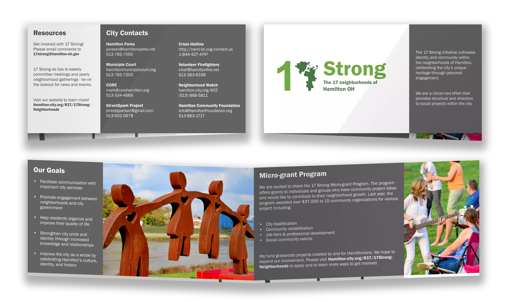
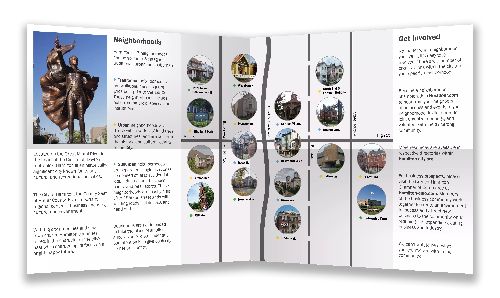
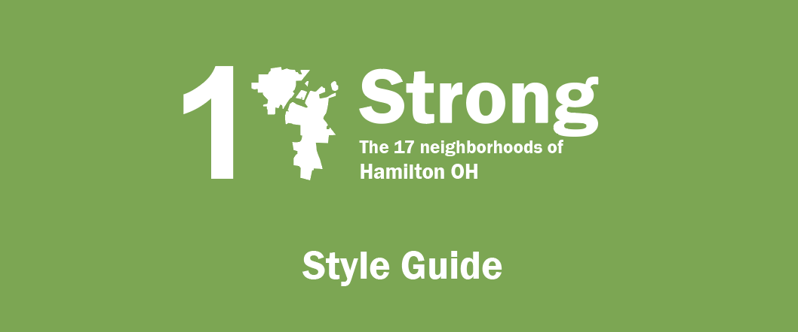

Pamphlet
 This pamphlet was designed to be distributed in Hamilton neighborhoods to raise awareness for how groups and individuals can better advocate for their social communities within the city. The ready-to-use print deliverable meets the following criteria:
- Portable, brief, and concise
- Easy-to-read design and content
- Approachable and engaging information
- Include overall purpose and impact
- Raise awareness of programs (including micro-grant)
- Offer call-to-actions encouraging neighborhood growth
Usability Research
Demographics
- Young college student in Hamilton: unsure where to go after school, could hear a different perspective and also what someone values when considering leaving the city
- Long-time Hamilton resident and employee within the city: has interest in local history but isn’t very involved with any city initiatives, can provide perspective on younger generation and more effective call-to-actions for engagement
- Older, small-business owner and long-time resident: invested in community activities and local history. Owns a local business in the German Village: vested interest in local success and may have unique business insights.
Procedure
Individuals were given a brief overview through a consent form, asked some pre-and post-observation questions, then asked for additional comments and feedback. Participants were told to focus on takeaways and call-to-actions of the brochure.
Sample Questions
- Have you heard about the 17Strong initiative?
- How do you identify yourself as someone from the area?
- What does the city mean to you?
- How are you currently involved with your community?
- What do you think is the purpose of this pamphlet?
- What did you learn from this pamphlet?
- Were there any parts that felt confusing?
- Are you interested in getting involved with 17Strong?
- What suggestions would you give regarding this pamphlet’s:
- overall design?
- content?
- call to action?
- After reading this, what else would you like to learn about Hamilton?
Findings
- Missing call-to-action for audience members
- Condensing information about neighborhoods
- Adding more relevant information and a “human” touch
- Create better flow of content.
In general, participants of the interviews had no previous knowledge or experience with 17 Strong, and all encouraged stronger marketing tactics. A uniting digital and physical presence (overall branding) of the initiative would help the image.
Style Guide
Recommendations
Through usability findings and research, a new brochure was created with the following elements.
Imagery
- 17 Strong logo: a new logo is proposed for 17 Strong, the “7” shaped like a map of Hamilton, Ohio. This fits the initiative’s brand and purpose (uniting Hamilton while celebrating its neighborhoods) distinguishing the logo from the City of Hamilton’s logo while keeping a similar font and color scheme. Text is bigger for ease of reading.
- Standalone images: Images were chosen to signify Hamilton’s social community with bright colors and lively subjects (could be replaced by more activity-based images).
- Neighborhood map: map was changed to place more focus on each neighborhood, color-coded based on the neighborhood types, and given actual pictures of neighborhood features based on usability feedback.
Copy
- Introduction is condensed for easy reading and focuses on overall goals and purpose
- Micro-grant program: new micro-grant section is added to advertise opportunities for community engagement with examples and instructions for individuals who are interested in making an impact on their community
- Resources: new section for resources is added for people who are interested in different areas of the city--may prove a handy section for reaching out to organizations and staying involved
- Hamilton blurb: a quick blurb about the city was added to vary content and add uniting information before splitting off to address the distinctions of each neighborhood
- Neighborhood blurb: neighborhood section was condensed based on user feedback, keeping important elements while leaving more room for brochure call-to-actions.
- Get involved: new section was added per client request and user feedback detailing different ways general Hamilton residents can get involved with the community.
Future Direction
17 Strong should consider revisiting their brand, and focus on different channels (marketing) to reach Hamilton residents. 17Strong can leverage powerful, word-of-mouth growth as there are so many people and organizations it is involved with, especially carrying forward the micro-grant program.